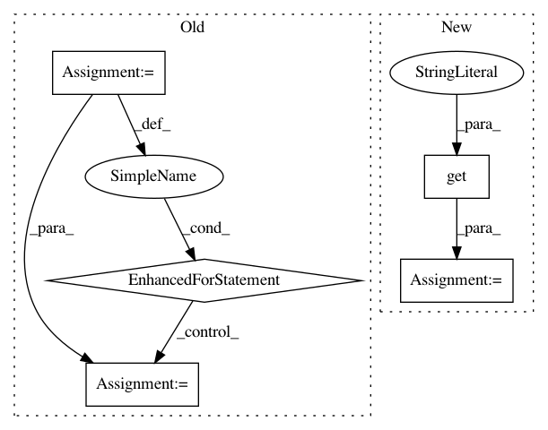

b71c912da70e307ff1a9f07c7ca277a727306126,python/ray/tune/examples/mlflow_example.py,,easy_objective,#Any#,18
Before Change
def easy_objective(config):
for i in range(20):
result = dict(
timesteps_total=i,
mean_loss=(config["height"] - 14)**2 - abs(config["width"] - 3))
tune.report(**result)
time.sleep(0.02)
if __name__ == "__main__":
client = MlflowClient()
experiment_id = client.create_experiment("test")
After Change
// Hyperparameters
width, height = config["width"], config["height"]
for step in range(config.get("steps", 100)):
// Iterative training function - can be any arbitrary training procedure
intermediate_score = evaluation_fn(step, width, height)
// Feed the score back back to Tune.
tune.report(iterations=step, mean_loss=intermediate_score)
time.sleep(0.1)
if __name__ == "__main__":
client = MlflowClient()
experiment_id = client.create_experiment("test")
In pattern: SUPERPATTERN
Frequency: 3
Non-data size: 5
Instances
Project Name: ray-project/ray
Commit Name: b71c912da70e307ff1a9f07c7ca277a727306126
Time: 2020-07-05
Author: rliaw@berkeley.edu
File Name: python/ray/tune/examples/mlflow_example.py
Class Name:
Method Name: easy_objective
Project Name: wkentaro/labelme
Commit Name: 7ad8d5c5cf89269d191117c4dd41ce205bc66c8c
Time: 2019-05-15
Author: www.kentaro.wada@gmail.com
File Name: labelme/widgets/label_dialog.py
Class Name: LabelDialog
Method Name: resetFlags
Project Name: ray-project/ray
Commit Name: 87557a00fa23ee7b3ecc7014de00e5c311e79758
Time: 2020-04-27
Author: rliaw@berkeley.edu
File Name: python/ray/tune/suggest/repeater.py
Class Name: Repeater
Method Name: add_configurations